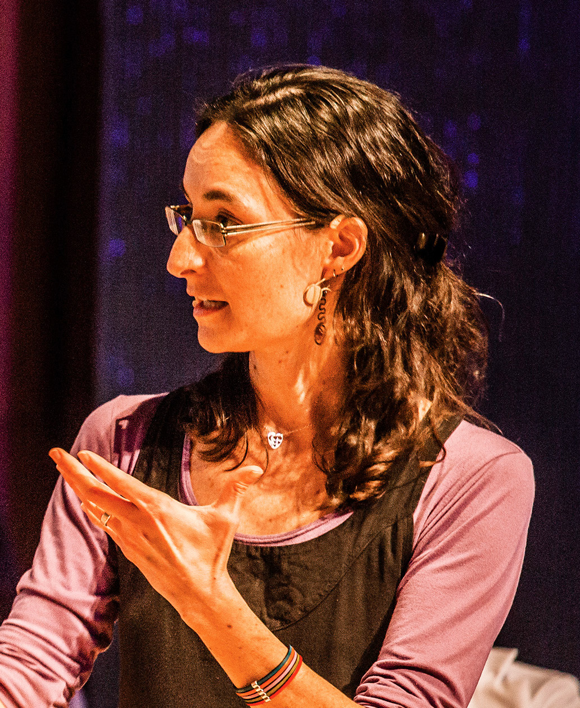

Desirable Futures with robots
A caring, feminist, humanist narrative for social robots —
invented collectively, across cultures, before the dominant one settles.
From laboratory to industry.
Robotics is shifting fast. In the past three years, parts of the field — humanoid platforms most visibly, but also home robots, delivery and logistics robots, service and care robots — have moved from laboratory subfields to industry-led races, with multi-trillion-dollar market forecasts and sizeable state investment in China, South Korea, and elsewhere. Capable, affordable platforms are reaching the market (Unitree's G1 humanoid at around $16K USD is one indicator among many).
Within one to two years, autonomous and semi-autonomous robots — humanoid or otherwise — are expected to be present in everyday life: at home, at work, in care, in public space.
HRI has a narrow window in which to shape the discourse. Practically, the next eighteen to twenty-four months.
Efficiency. Productivity. Replacement.
The prevailing framing for autonomous and social robotics rests on a stable set of arguments: robots will perform jobs that are dull, dirty, or dangerous; they will offset labour shortages; they will save human time; and — most visibly through the humanoid wave — they will represent the next stage of the AI race, a step from text and image into physical AI.
Capital momentum amplifies these claims. Industry forecasts place the humanoid segment alone on a multi-trillion-dollar trajectory; state-backed programmes in China, South Korea, and elsewhere position robotics as a strategic frontier. The discourse is largely shaped by industry actors and media, with limited HRI presence.
Across these arguments runs a consistent through-line: robots are positioned in competition with humans — on labour, on time, on capability.
The early effects of letting this framing harden are visible in generative AI. With embodied, autonomous robots — humanoid or otherwise — the same logic extends into domestic, relational, civic, and intimate domains, settings where the criteria of efficiency and replacement translate poorly.
Another narrative is possible. And desirable.
Without explicit debate, much of robotics has begun to converge on a narrow vision — robots as efficient surrogates for human labour, with the humanoid form as the most visible default. The convergence is largely silent: never formally decided, never ethically justified, sustained by media coverage, capital, and funding incentives.
It deserves to be examined. Human-centred design is not the same as human-shaped design — and the question is not only how to design a robot, but whether and when a robot is the right answer at all. The HRI community has, at minimum, a responsibility to keep these distinctions live, and, where possible, to reclaim the narrative.
This series is one move in that direction. Not AI to augment humans. Not robots as obedient servitors with superhuman powers. But robots — of every form — as an alternative form of presence alongside human: different, partial, situated, sometimes useful, sometimes other.
Can we invent a caring,
feminist, humanist
narrative for social robots?
Toward one hundred workshops. Distributed.
workshops — our target for the series. Reaching that number depends on researchers across the HRI community stepping in.
publics: children, adolescents, older adults, warehouse workers, care workers, students, families — across cultures and socio-economic contexts.
shared reporting format, so results compare, aggregate, and accumulate into something larger than any single workshop.
Workshops are led by HRI researchers acting as local facilitators. Protocols can vary by audience — role-play, drawing, brainstorming, interviews — but every workshop reports back in the same form, so the collective picture remains legible.
These workshops do not replace long-term in-situ deployment. They do something different, and necessary: they plant alternative seeds, in many soils, before the dominant narrative finishes setting.
Reversing the narrative.
Each workshop opens with a what if that reverses one element of the dominant framing — and asks participants to imagine a desirable future growing from there. Not dystopia. Not subversion for its own sake. A future they would actually want.
-
01
What if robots didn't always say yes, but questioned you?
-
02
What if a robot was clumsy, and needed our help, all the time?
-
03
What if a robot didn't try to save your time, but to waste it well?
-
04
What if a robot brought you something you never asked for?
-
+
A growing bank, contributed by researchers and participants. Have one? Send it →
A shared kit. Light, adaptable, rigorous.
-
One-page rationale
The series' premise, written for adaptation. Translations for children, adolescents, warehouse workers, older adults.
-
The what if bank
A growing set of inversion prompts, contributed by the network, free to use and remix.
-
Shared reporting form
Title · short description · image · structured answers. So results aggregate into something larger.
-
Example formats
Role-play (recommended — it places people in situation), drawing, speculative fictions (written or drawn), brainstorming, structured interviews.
All of the above is bundled in one six-page A4 document. Download the kit (PDF) →
April 2027 — and ten years beyond.
Final event
Results from the series presented to a broad audience — researchers, policy makers, industry, media. A public synthesis of what the workshops, distributed across the world, have imagined together.
The series plants seeds.
· For people to feel safe today, in the face of robots arriving.
· For designing desirable futures with robots, on a ten-year horizon.
· For challenging the view of robots as obedient servitors with superhuman powers — and building alternatives in its place.
Initial coordinators.
This is an initiative of the HRI community. It begins with a small group of coordinators across the world, and grows with every researcher who joins.
-
Séverin Lemaignan
IIIA-CSIC · Spain
-

Raquel Ros
IIIA-CSIC · Spain
-
AJung Moon
McGill University · Canada
-
Ilaria Torre
Chalmers University · Sweden
-
Yolande Strengers
Monash University · Australia
Run a workshop.
Shape the narrative.
We are looking for HRI researchers — and adjacent practitioners — to facilitate the next ten workshops, then the next ten, then the next.
Write to us
contact@desirable-futures.org
Repository
github.com/<your-org>/desirable-futures